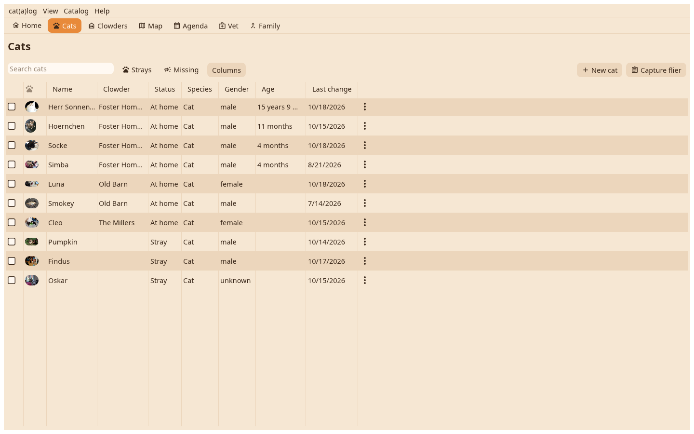

Every cat in a table: a column per field you choose, sortable, searchable, with the Strays and Missing filters at the top.

Columns picks the fields that show; the choice is kept per catalog. A click on a header sorts, the age column counts from the birth date, the last change column from the log. Search filters by name and values as you type.
A click marks a row, Ctrl and Shift mark several, the arrow keys walk, Enter opens the marked cat as a card on the desk. The ⋮ on a row has the cat's menu; a right-click the same.
With rows marked, a tick lays them all on the desk, and the marked menu acts on the set: open all on the desk, move to another home, move to another catalog, hide or unhide, export, delete.
New cat asks for a name, with one proposed and a dice for another, and makes the cat in the home you are in. Capture flier reads a poster from an image file.